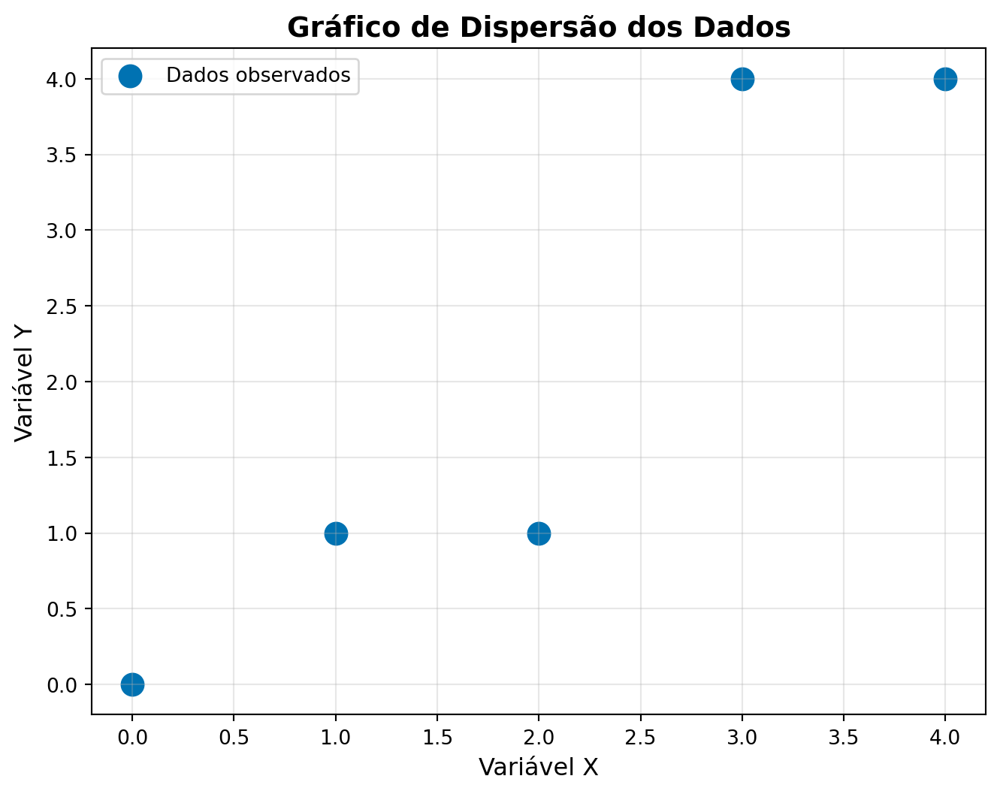
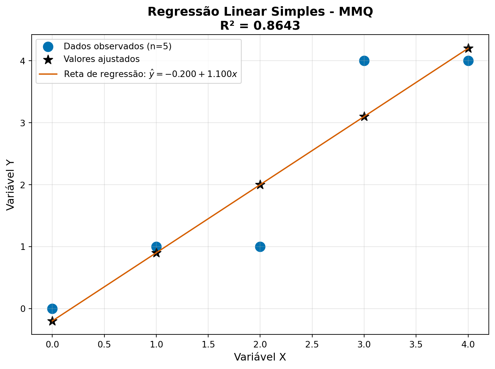

import matplotlib.pyplot as plt # Para criação e manipulação gráfica
import numpy as np # Para operações matemáticas e matriciaisMétodo dos Mínimos Quadrados na Regressão Linear Simples
Implementação em Python usando Álgebra Matricial
Tutorial prático para implementar o método dos mínimos quadrados em Python, aplicando os conceitos de álgebra linear e estatística básica.
1 Introdução
DicaObjetivos
Neste tutorial, vamos implementar o Método dos Mínimos Quadrados (MMQ) em Python para ajustar um modelo de regressão linear simples.
Objetivo: Encontrar os coeficientes \(\beta_0\) e \(\beta_1\) da equação \(\hat{y} = \beta_0 + \beta_1 x\) que melhor se ajustam aos nossos dados.
2 Importando as Bibliotecas
Primeiro, vamos importar as bibliotecas que usaremos:
Dica: No Google Colab, essas bibliotecas já vêm instaladas!
3 Inserindo os Dados
Vamos trabalhar um exemplo simples em que \(x\) e \(y\) são inseridos como listas em Python:
# Nossos dados de exemplo
x = [0, 1, 2, 3, 4] # Variável independente (preditora)
y = [0, 1, 1, 4, 4] # Variável dependente (resposta)Caso deseje visualizar se os objetos x e y foram criados corretamente podemos utilizar a função print().
print("Valores de x:", x)
print("Valores de y:", y)Valores de x: [0, 1, 2, 3, 4]
Valores de y: [0, 1, 1, 4, 4]4 Visualizando os Dados
Antes de ajustar o modelo, vamos visualizar nossos dados em um gráfico de dispersão utilizando a função scatter() da biblioteca Matplotlib:
# Criando o gráfico de dispersão
plt.figure(figsize=(8, 6))
plt.scatter(x, y, color = '#0072B2', s=120, label='Dados observados')
# Configurando o layout gráfico
plt.title('Gráfico de Dispersão dos Dados', fontsize=14, fontweight='bold')
plt.xlabel('Variável X', fontsize=12)
plt.ylabel('Variável Y', fontsize=12)
plt.grid(True, alpha=0.3)
plt.legend()
plt.show()
Observação: O gráfico sugere uma relação linear entre as variáveis, o que justifica o uso da regressão linear simples, que iremos ajustar por meio do MMQ.
5 Implementando o MMQ - Passo a Passo
5.1 Criando os Vetores Base
Lembre-se da teoria: inicialmente, precisamos definir os vetores \(\vec{f}_0\), \(\vec{f}_1\) e \(\vec{y}\):
\[\vec{f}_0 = \begin{bmatrix} 1 \\ 1 \\ \vdots \\ 1 \end{bmatrix} \quad \text{,} \quad \vec{f}_1 = \begin{bmatrix} x_1 \\ x_2 \\ \vdots \\ x_n \end{bmatrix} \quad \text{e} \quad \vec{y} = \begin{bmatrix} y_1 \\ y_2 \\ \vdots \\ y_n \end{bmatrix}\]
# Número de observações
n = len(x)
# Vetor f0: vetor de 1's (para o intercepto β₀)
f0 = [1] * n # Cria uma lista com n elementos iguais a 1
# Vetor f1: nossos valores de x (para o coeficiente β₁)
f1 = x.copy() # Copia os valores de x para um novo objeto denominado f1Visualizando os vetores \(\vec{f}_0\) e \(\vec{f}_1\).
print("Vetor f0 (intercepto):", f0)
print("Vetor f1 (coeficiente):", f1)Vetor f0 (intercepto): [1, 1, 1, 1, 1]
Vetor f1 (coeficiente): [0, 1, 2, 3, 4]5.2 Construindo as Matrizes X e Y
Agora vamos montar as matrizes do sistema:
\[X = \begin{bmatrix} \vec{f}_0 & \vec{f}_1 \end{bmatrix} = \begin{bmatrix} 1 & x_1 \\ 1 & x_2 \\ \vdots & \vdots \\ 1 & x_n \end{bmatrix} \quad \text{e} \quad Y = \begin{bmatrix} \vec{y} \end{bmatrix} = \begin{bmatrix} y_1 \\ y_2 \\ \vdots \\ y_n \end{bmatrix}\]
# Matriz X: combinando f0 e f1 em colunas
X = np.column_stack((f0, f1))
# Matriz Y: transformando y em matriz com n linhas e 1 coluna
Y = np.array(y).reshape(n, 1)Visualizando as matrizes \(X\) e \(Y\).
print("Matriz X:")
print(X)
print("\nMatriz Y:")
print(Y)
print(f"\nDimensões - X: {X.shape}, Y: {Y.shape}")Matriz X:
[[1 0]
[1 1]
[1 2]
[1 3]
[1 4]]
Matriz Y:
[[0]
[1]
[1]
[4]
[4]]
Dimensões - X: (5, 2), Y: (5, 1)Note agora que a matriz \(X\) tem 5 linhas e 2 colunas, enquanto a matriz \(Y\) tem 5 linhas e 1 colunas.
5.3 Resolvendo o Sistema Normal
Agora vamos calcular os coeficientes usando as operações matriciais: \[B = (X^T X)^{-1} X^T Y\]
# Calculando X transposta vezes X
XTX = np.dot(X.T, X) # X.T é a transposta de X
# Calculando X transposta vezes Y
XTY = np.dot(X.T, Y)
# Calculando a matriz inversa (X^T X)^(-1)
XTX_inv = np.linalg.inv(XTX) # Inversa de X^T X
# Coeficientes de regressão
B = np.dot(XTX_inv, XTY)Visualizando os objetos
# Calculando X transposta vezes X
print("X^T X:")
print(XTX)
print("\nX^T Y:")
print(XTY)
print("\nB:")
print(B)X^T X:
[[ 5 10]
[10 30]]
X^T Y:
[[10]
[31]]
B:
[[-0.2]
[ 1.1]]
Nota
- A função ´np.dot()´ em Python pode ser substituída pelo símbolo
@. Teste os códigos abaixo e verifique que os resultados coincidem:
print("Usando np.dot()")
print(np.dot(X.T, X))Usando np.dot()
[[ 5 10]
[10 30]]print("Usando '@'")
print(X.T @ X)Usando '@'
[[ 5 10]
[10 30]]- Os elementos internos de uma matriz podem ser acessados destacando suas posições na linha e na coluna. Considere a matriz
B. O coeficiente \(\beta_0\) pode ser acessado na linha 1 e coluna 1, enquanto \(\beta_1\) pode ser acessado na linha 2 e coluna 1.
print(B[0,0]) # Beta 0-0.1999999999999993print(B[1,0]) # Beta 11.15.4 Obtendo os Valores Ajustados de y
Tendo obtido os coeficientes de regressão, os valores ajustados de \(y\) (\(\hat{y}\)) podem ser obtidos pela multiplicação matricial:
\[F = X B = \begin{bmatrix} 1 & x_1 \\ 1 & x_2 \\ \vdots & \vdots \\ 1 & x_n \end{bmatrix} \begin{bmatrix} \hat{\beta}_0 \\ \hat{\beta}_1 \end{bmatrix}\]
Obs.: denominamos \(F\) a matriz de valores ajustados de \(y\).
# Valores ajustados (preditos)
F = np.dot(X, B)# Valores ajustados (preditos)
print(F)[[-0.2]
[ 0.9]
[ 2. ]
[ 3.1]
[ 4.2]]5.5 Avaliando a Qualidade do Ajuste
5.5.1 Calculando a Soma dos Quadrados dos Resíduos (\(SQ_{res}\))
\(SQ_{res}\) pode ser obtida pela multiplicação matricial:
\[SQ_{res} = \boldsymbol{e}^T \boldsymbol{e}\]
Em que \(\boldsymbol{e}\) é a matriz coluna dos resíduos obtida pela diferença entre os valores observados e ajustados de \(y\):
\[\boldsymbol{e} = Y - F = \begin{bmatrix} y_1 \\ y_2 \\ \vdots \\ y_n \end{bmatrix} - \begin{bmatrix} \hat{y}_1 \\ \hat{y}_2 \\ \vdots \\ \hat{y}_n \end{bmatrix} = \begin{bmatrix} e_1 \\ e_2 \\ \vdots \\ e_n \end{bmatrix}\]
# Resíduos: diferença entre valores observados e ajustados
e = Y - F
# Soma dos Quadrados dos Resíduos
SQres = np.dot(e.T, e)[0, 0]5.5.2 Calculando a Soma dos Quadrados Totais (\(SQ_{tot}\))
\(SQ_{tot}\) pode ser obtida pela multiplicação matricial:
\[SQ_{tot} = \boldsymbol{D}^T \boldsymbol{D}\]
Em que \(\boldsymbol{D}\) é a matriz coluna dos desvios da média obtida pela diferença entre os valores observados de \(y\) e a média de \(\overline{y}\):
\[\boldsymbol{D} = Y - \overline{Y} = \begin{bmatrix} y_1 \\ y_2 \\ \vdots \\ y_n \end{bmatrix} - \begin{bmatrix} \overline{y} \\ \overline{y} \\ \vdots \\ \overline{y} \end{bmatrix} = \begin{bmatrix} d_1 \\ d_2 \\ \vdots \\ d_n \end{bmatrix}\]
# Soma dos Quadrados Total
Y_medio = np.mean(Y)
D = Y - Y_medio
SQtot = np.dot(D.T, D)[0, 0]5.5.3 Calculando o coeficiente de determinação \(R^2\):
O \(R^2\) é dado pela expressão:
\[R^2 = 1 - \frac{SQ_{res}}{SQ_{tot}}\]
# Coeficiente de Determinação R²
R2 = 1 - (SQres / SQtot)Visualizando os resultados:
print(" Medidas de Qualidade do Ajuste:")
print(f"Soma dos Quadrados dos Resíduos (SQres): {SQres:.4f}")
print(f"Soma dos Quadrados Total (SQtot): {SQtot:.4f}")
print(f"Coeficiente de Determinação (R²): {R2:.4f}")
print(f"Porcentagem da variação explicada: {R2*100:.2f}%") Medidas de Qualidade do Ajuste:
Soma dos Quadrados dos Resíduos (SQres): 1.9000
Soma dos Quadrados Total (SQtot): 14.0000
Coeficiente de Determinação (R²): 0.8643
Porcentagem da variação explicada: 86.43%Interpretação do \(R^2\):
- Varia de 0 a 1
- Quanto mais próximo de 1, melhor o ajuste
- Representa a proporção da variação em \(y\) explicada pelo modelo
6 Visualizando o Resultado Final
Vamos plotar os dados originais junto com a reta ajustada:
# Criando o gráfico final
plt.figure(figsize=(8, 6))
# Pontos observados
plt.scatter(x, y,
color = '#0072B2', s=120,
label=f'Dados observados (n={n})')
# Valores ajustados
plt.scatter(x, F[:,0],
color='#000000', marker='*', s=120,
label='Valores ajustados')
# Reta ajustada
plt.plot(x, F[:,0], color='#D55E00',
label=fr'Reta de regressão: $\hat{{y}} = {B[0,0]:.3f} + {B[1,0]:.3f}x$')
# Configurações do gráfico
plt.title(f'Regressão Linear Simples - MMQ\nR² = {R2:.4f}',
fontsize=14, fontweight='bold')
plt.xlabel('Variável X', fontsize=12)
plt.ylabel('Variável Y', fontsize=12)
plt.grid(True, alpha=0.3)
plt.legend(fontsize=10)
plt.tight_layout()
plt.show()
7 Resumo dos Resultados
print("="*50)
print(" RESUMO DA REGRESSÃO LINEAR")
print("="*50)
print(f"Equação ajustada: y = {B[0,0]:.4f} + {B[1,0]:.4f}x")
print(f"Coeficiente de determinação (R²): {R2:.4f}")
print(f"Porcentagem da variação explicada: {R2*100:.2f}%")
print("="*50)==================================================
RESUMO DA REGRESSÃO LINEAR
==================================================
Equação ajustada: y = -0.2000 + 1.1000x
Coeficiente de determinação (R²): 0.8643
Porcentagem da variação explicada: 86.43%
==================================================8 Resumo do Código
- Inserção dos Dados
x = [0, 1, 2, 3, 4]
y = [0, 1, 1, 4, 4]- Definição das matrizes do sistema
n = len(x)
f0 = [1] * n
f1 = x.copy()
X = np.column_stack((f0, f1))
Y = np.array(y).reshape(n, 1)- Cálculo dos coeficientes
XTX = X.T @ X
XTY = X.T @ Y
XTX_inv = np.linalg.inv(XTX)
B = XTX_inv @ XTY- Qualidade do ajuste
F = X @ B
e = Y - F
SQres = (e.T @ e)[0, 0]
Y_medio = np.mean(Y)
D = Y - Y_medio
SQtot = (D.T @ D)[0, 0]
R2 = 1 - (SQres / SQtot)9 Exercício Prático
Implemente o MMQ com novos dados:
# Experimente com estes dados:
x_novo = [1, 2, 3, 4, 5, 6]
y_novo = [2, 4, 5, 4, 5, 7]
# Dica: você pode copiar e adaptar o código acima!